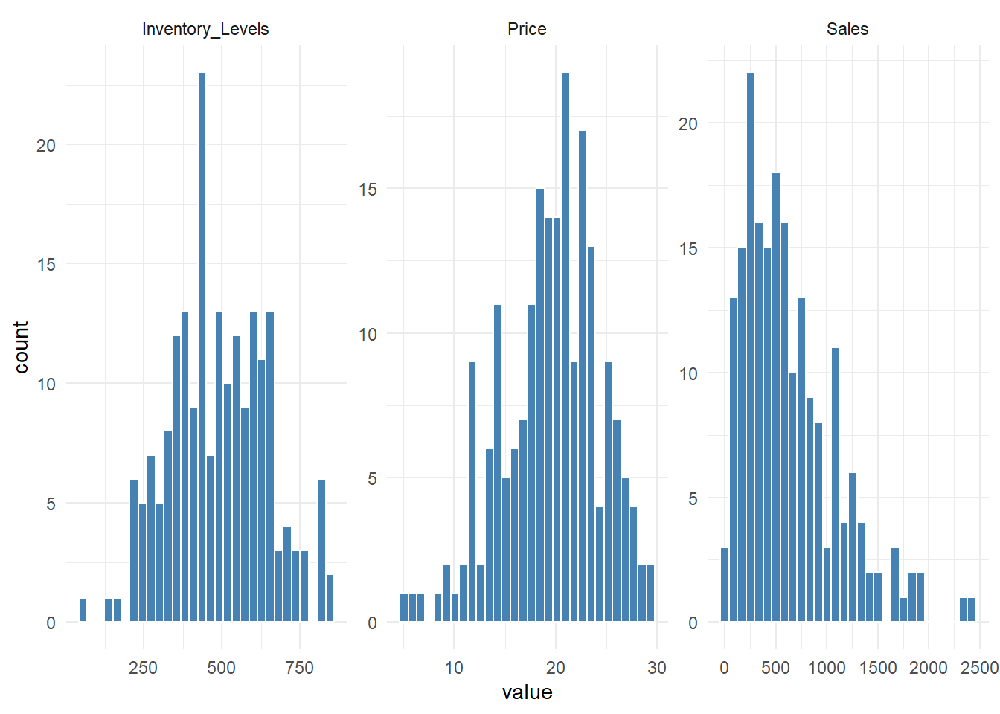

# load libraries
library(tidyverse)
library(readr)
library(tidyr)
library(ggplot2)
library(scales)
library(MASS)
library(GGally)
library(Matrix)
library(numDeriv)
# load data
df <- read_csv("https://raw.githubusercontent.com/AmandaSFox/DATA605_Math/refs/heads/main/Final/synthetic_retail_data.csv")
# turn off scientific notation
options(scipen = 999)DATA605_Final
Preparation:
Load Libraries and Data
EDA
The dataset contains 200 rows and six numeric columns. It appears clean with no NA values, duplicate product IDs, or unusual values.
glimpse(df)Rows: 200
Columns: 6
$ Product_ID <dbl> 1, 2, 3, 4, 5, 6, 7, 8, 9, 10, 11, 12, 13, 14, 15, 1…
$ Sales <dbl> 158.43952, 278.99020, 698.85868, 1832.39467, 459.703…
$ Inventory_Levels <dbl> 367.4421, 426.6512, 407.6394, 392.3912, 448.3120, 54…
$ Lead_Time_Days <dbl> 6.314587, 5.800673, 3.071936, 3.534253, 10.802241, 1…
$ Price <dbl> 18.795197, 26.089636, 22.399985, 27.092013, 18.30782…
$ Seasonality_Index <dbl> 1.1839497, 0.8573051, 0.6986774, 0.6975404, 0.840725…# check NA (none)
df %>%
summarise(across(everything(), ~sum(is.na(.))))# A tibble: 1 × 6
Product_ID Sales Inventory_Levels Lead_Time_Days Price Seasonality_Index
<int> <int> <int> <int> <int> <int>
1 0 0 0 0 0 0# check dup (none)
anyDuplicated(df$Product_ID)[1] 0# summary and distributions
summary(df) Product_ID Sales Inventory_Levels Lead_Time_Days
Min. : 1.00 Min. : 25.57 Min. : 67.35 Min. : 0.491
1st Qu.: 50.75 1st Qu.: 284.42 1st Qu.:376.51 1st Qu.: 5.291
Median :100.50 Median : 533.54 Median :483.72 Median : 6.765
Mean :100.50 Mean : 636.92 Mean :488.55 Mean : 6.834
3rd Qu.:150.25 3rd Qu.: 867.58 3rd Qu.:600.42 3rd Qu.: 8.212
Max. :200.00 Max. :2447.49 Max. :858.79 Max. :12.722
Price Seasonality_Index
Min. : 5.053 Min. :0.3305
1st Qu.:16.554 1st Qu.:0.8475
Median :19.977 Median :0.9762
Mean :19.560 Mean :0.9829
3rd Qu.:22.924 3rd Qu.:1.1205
Max. :29.404 Max. :1.5958 plt_dist <- df %>%
pivot_longer(cols = c(Sales,
Inventory_Levels,
Lead_Time_Days,
Price,
Seasonality_Index),
names_to = "name",
values_to = "value") %>%
ggplot(aes(x = value)) +
facet_wrap(~name, scales = "free") +
geom_histogram(bins = 30, fill = "wheat", color = "white") +
theme_minimal()
plt_distProblem 1: Business Risk and Revenue Modeling
Context: You are a data scientist working for a retail chain that models sales, inventory levels, and the impact of pricing and seasonality on revenue. Your task is to analyze various distributions that can describe sales variability and forecast potential revenue.
Part 1: Empirical and Theoretical Analysis of Distributions (5 Points)
1. Generate and Analyze Distributions:
X ~ Sales: Consider the Sales variable from the dataset. Assume it follows a Gamma distribution and estimate its shape and scale parameters using the fitdistr function from the MASS package.
Using the fitdistr function from the MASS package: * Shape = 1.834964 * Scale = 347.0997
# fit gamma distribution to Sales
fit_sales_gamma <- fitdistr(df$Sales, densfun = "gamma")
fit_sales_gamma shape rate
1.8349640762 0.0028810166
(0.1511756159) (0.0002556985)# extract shape rate and rate, calculate scale
sales_gamma_shape <- fit_sales_gamma$estimate["shape"]
sales_gamma_rate <- fit_sales_gamma$estimate["rate"]
sales_gamma_scale <- 1 / sales_gamma_rate
# display results
sales_gamma_shape shape
1.834964 sales_gamma_scale rate
347.0997 Y ~ Inventory Levels: Assume that the sum of inventory levels across similar products follows a Lognormal distribution. Estimate the parameters for this distribution.
- Mean = 6.133037
- SD = 0.3633273
# fit log normal distribution to Inventory Levels
fit_inv_log <- fitdistr(df$Inventory_Levels, densfun = "lognormal")
fit_inv_log meanlog sdlog
6.13303680 0.36332727
(0.02569112) (0.01816636)# extract mean and sd
inv_log_mean <- fit_inv_log$estimate["meanlog"]
inv_log_sd <- fit_inv_log$estimate["sdlog"]
# display results
inv_log_mean meanlog
6.133037 inv_log_sd sdlog
0.3633273 Z ~ Lead Time: Assume that Lead_Time_Days follows a Normal distribution. Estimate the mean and standard deviation.
- Mean = 6.834298
- SD = 2.083214
# fit normal distribution to Lead Time
fit_lead_norm <- fitdistr(df$Lead_Time_Days,
densfun = "normal")
fit_lead_norm mean sd
6.8342981 2.0832137
(0.1473055) (0.1041607)# extract mean and sd
lead_norm_mean <- fit_lead_norm$estimate["mean"]
lead_norm_sd <- fit_lead_norm$estimate["sd"]
# display results
lead_norm_mean mean
6.834298 lead_norm_sd sd
2.083214 2. Calculate Empirical Expected Value and Variance:
Calculate the empirical mean and variance for all three variables.
df_stats_actual <- df %>%
summarise(
Sales_mean = mean(Sales),
Sales_var = var(Sales),
Inventory_mean = mean(Inventory_Levels),
Inventory_var = var(Inventory_Levels),
LeadTime_mean = mean(Lead_Time_Days),
LeadTime_var = var(Lead_Time_Days)
) %>%
pivot_longer(everything(), names_to = c("variable", ".value"), names_sep = "_")
df_stats_actual# A tibble: 3 × 3
variable mean var
<chr> <dbl> <dbl>
1 Sales 637. 214832.
2 Inventory 489. 24039.
3 LeadTime 6.83 4.36Compare these empirical values with the theoretical values derived from the estimated distribution parameters.
# calculate theoretrical means and variances
sales_gamma_shape shape
1.834964 sales_gamma_scale rate
347.0997 inv_log_mean meanlog
6.133037 inv_log_sd sdlog
0.3633273 lead_norm_mean mean
6.834298 lead_norm_sd sd
2.083214 # Gamma mean = shape * scale
# Lognormal mean = mean + 05 * sd^2
# normal mean = mean
# Gamma variance = shape * scale^2
# Lognormal variance = exp(sd^2)-1 * exp(2 * mean + sd^2)
# normal var = sd^2
tb_stats_theoretical <- tibble(
variable = c("Sales", "Inventory_Levels", "Lead_Time_Days"),
mean = c(
sales_gamma_shape * sales_gamma_scale,
exp(inv_log_mean + 0.5 * inv_log_sd^2),
lead_norm_mean
),
variance = c(
sales_gamma_shape * sales_gamma_scale^2,
(exp(inv_log_sd^2) - 1) * exp(2 * inv_log_mean + inv_log_sd^2),
lead_norm_sd^2
)
)
tb_stats_theoretical# A tibble: 3 × 3
variable mean variance
<chr> <dbl> <dbl>
1 Sales 637. 221073.
2 Inventory_Levels 492. 34197.
3 Lead_Time_Days 6.83 4.34# rename some values in theoretical df variable column to join
df_stats_theoretical <- tb_stats_theoretical %>%
mutate(variable = case_when(
variable == "Inventory_Levels" ~ "Inventory",
variable == "Lead_Time_Days" ~ "LeadTime",
TRUE ~ variable))
df_stats_theoretical# A tibble: 3 × 3
variable mean variance
<chr> <dbl> <dbl>
1 Sales 637. 221073.
2 Inventory 492. 34197.
3 LeadTime 6.83 4.34# join and compare
df_compare <- df_stats_actual %>%
left_join(df_stats_theoretical, by = "variable") %>%
rename(empirical_mean = mean.x,
empirical_var = var,
theoretical_mean = mean.y,
theoretical_var = variance) %>%
mutate(variance_mean = theoretical_mean - empirical_mean,
variance_var = theoretical_var - empirical_var) %>%
dplyr::select(variable,
theoretical_mean,
empirical_mean,
variance_mean,
theoretical_var,
empirical_var,
variance_var)
df_compare# A tibble: 3 × 7
variable theoretical_mean empirical_mean variance_mean theoretical_var
<chr> <dbl> <dbl> <dbl> <dbl>
1 Sales 637. 637. -0.000719 221073.
2 Inventory 492. 489. 3.73 34197.
3 LeadTime 6.83 6.83 0 4.34
# ℹ 2 more variables: empirical_var <dbl>, variance_var <dbl>Part 2: Probability Analysis and Independence Testing (5 Points)
2. Empirical Probabilities: For the Lead_Time_Days variable (assumed to be normally distributed), calculate the following empirical probabilities:
\[P(Z \gt \mu | Z \gt \mu - \sigma)\]
Given that lead time is greater than one standard deviation below the mean, the probability that lead time is greater than the mean is 0.593
\[P(Z \gt \mu + \sigma | Z \gt \mu)\]
Given that lead time is greater than the mean, the probability that lead time is greater than one standard deviation above the mean is 0.313
\[P(Z \gt \mu + 2\sigma | Z \gt \mu)\]
Given that lead time is greater than the mean, the probability that lead time is greater than two standard deviations above the mean is 0.030
# define mu and sigma
lead_mu <- mean(df$Lead_Time_Days)
lead_sigma <- sd(df$Lead_Time_Days)
#P(Z \gt \mu | Z \gt \mu - \sigma)
lead_prob1 <- df %>%
filter(Lead_Time_Days > lead_mu - lead_sigma) %>%
summarise(mean(Lead_Time_Days > lead_mu))
lead_prob1# A tibble: 1 × 1
`mean(Lead_Time_Days > lead_mu)`
<dbl>
1 0.593#P(Z \gt \mu + \sigma | Z \gt \mu)
lead_prob2 <- df %>%
filter(Lead_Time_Days > lead_mu) %>%
summarise(mean(Lead_Time_Days > lead_mu+ lead_sigma))
lead_prob2# A tibble: 1 × 1
`mean(Lead_Time_Days > lead_mu + lead_sigma)`
<dbl>
1 0.313#P(Z \gt \mu + 2\sigma | Z \gt \mu)
lead_prob3 <- df %>%
filter(Lead_Time_Days > lead_mu) %>%
summarise(mean(Lead_Time_Days > lead_mu+ 2 * lead_sigma))
lead_prob3# A tibble: 1 × 1
`mean(Lead_Time_Days > lead_mu + 2 * lead_sigma)`
<dbl>
1 0.03032. Correlation and Independence:
Investigate the correlation between Sales and Price. Create a contingency table using quartiles of Sales and Price, and then evaluate the marginal and joint probabilities.
# create quartile bins with ntile from dplyr
df_sales_binned <- df %>%
mutate(Sales_Q = ntile(Sales, 4),
Price_Q = ntile(Price, 4))
# create table and calc probabilities
df_sales_binned_counts <- df_sales_binned %>%
count(Sales_Q, Price_Q) %>%
mutate(joint_prob = n / sum(n))
df_sales_binned_counts# A tibble: 16 × 4
Sales_Q Price_Q n joint_prob
<int> <int> <int> <dbl>
1 1 1 11 0.055
2 1 2 16 0.08
3 1 3 12 0.06
4 1 4 11 0.055
5 2 1 13 0.065
6 2 2 10 0.05
7 2 3 15 0.075
8 2 4 12 0.06
9 3 1 15 0.075
10 3 2 10 0.05
11 3 3 13 0.065
12 3 4 12 0.06
13 4 1 11 0.055
14 4 2 14 0.07
15 4 3 10 0.05
16 4 4 15 0.075# calculate sum of joint prob for each sales quartile
df_marginal_sales <- df_sales_binned_counts %>%
group_by(Sales_Q) %>%
summarise(marginal_sales = sum(joint_prob))
df_marginal_sales# A tibble: 4 × 2
Sales_Q marginal_sales
<int> <dbl>
1 1 0.25
2 2 0.25
3 3 0.25
4 4 0.25# calculate sum of joint prob for each price quartile
df_marginal_price <- df_sales_binned_counts %>%
group_by(Price_Q) %>%
summarise(marginal_price = sum(joint_prob))
df_marginal_sales# A tibble: 4 × 2
Sales_Q marginal_sales
<int> <dbl>
1 1 0.25
2 2 0.25
3 3 0.25
4 4 0.25Use Fisher’s Exact Test and the Chi-Square Test to check for independence between Sales and Price. Discuss which test is most appropriate and why.
There is no dependence between these variables binned into quartiles. P = 1 in both tests. A continuous method would probably show some relationship between the variables as information is lost in binning.
# create table (pivot wide in matrix format)
tbl_binned_counts <- table(df_sales_binned_counts$Sales_Q,
df_sales_binned_counts$Price_Q)
#run Fisher test
fisher_result<- tbl_binned_counts %>%
fisher.test()
#run chi square test
chisq_result<- tbl_binned_counts %>%
chisq.test()
fisher_result
Fisher's Exact Test for Count Data
data: .
p-value = 1
alternative hypothesis: two.sidedchisq_result
Pearson's Chi-squared test
data: .
X-squared = 0, df = 9, p-value = 1Problem 2: Advanced Forecasting and Optimization (Calculus) in Retail
Context: You are working for a large retail chain that wants to optimize pricing, inventory management, and sales forecasting using data-driven strategies. Your task is to use regression, statistical modeling, and calculus-based methods to make informed decisions.
Part 1: Descriptive and Inferential Statistics for Inventory Data (5 Points)
1. Inventory Data Analysis:
Generate univariate descriptive statistics for the Inventory_Levels and Sales variables.
# Min Max Mean and quartiles
df %>%
summary() Product_ID Sales Inventory_Levels Lead_Time_Days
Min. : 1.00 Min. : 25.57 Min. : 67.35 Min. : 0.491
1st Qu.: 50.75 1st Qu.: 284.42 1st Qu.:376.51 1st Qu.: 5.291
Median :100.50 Median : 533.54 Median :483.72 Median : 6.765
Mean :100.50 Mean : 636.92 Mean :488.55 Mean : 6.834
3rd Qu.:150.25 3rd Qu.: 867.58 3rd Qu.:600.42 3rd Qu.: 8.212
Max. :200.00 Max. :2447.49 Max. :858.79 Max. :12.722
Price Seasonality_Index
Min. : 5.053 Min. :0.3305
1st Qu.:16.554 1st Qu.:0.8475
Median :19.977 Median :0.9762
Mean :19.560 Mean :0.9829
3rd Qu.:22.924 3rd Qu.:1.1205
Max. :29.404 Max. :1.5958 # Standard Deviation
df %>%
summarize(sales_sd = sd(Sales),
inv_sd = sd(Inventory_Levels))# A tibble: 1 × 2
sales_sd inv_sd
<dbl> <dbl>
1 463. 155.Create appropriate visualizations such as histograms and scatterplots for Inventory_Levels, Sales, and Price.
# Histogram for selected metrics
plt_dist_selected <- df %>%
pivot_longer(cols = c(Sales,
Inventory_Levels,
Price),
names_to = "name",
values_to = "value") %>%
ggplot(aes(x = value)) +
facet_wrap(~name, scales = "free") +
geom_histogram(bins = 30,
fill = "steelblue",
color = "white") +
theme_minimal()
plt_dist_selected
# Pairwise scatterplots for selected metrics
plt_scatter <- df %>%
dplyr::select(Sales, Inventory_Levels, Price) %>%
ggpairs()
plt_scatterCompute a correlation matrix for Sales, Price, and Inventory_Levels.
df %>%
dplyr::select(Sales, Price, Inventory_Levels) %>%
cor(method = "pearson") Sales Price Inventory_Levels
Sales 1.00000000 0.10272730 -0.03529619
Price 0.10272730 1.00000000 -0.04025941
Inventory_Levels -0.03529619 -0.04025941 1.00000000Test the hypotheses that the correlations between the variables are zero and provide a 95% confidence interval.
The null hypothesis is that the correlation is zero between each of these variables and we fail to reject that hypothesis for all of the pairs below based on p-values. In additiona, the correlation coefficients are very small and the 95% confidence interval for all pairs includes zero.
Sales/Price:
Correlation coefficient 0.103 p value 0.1478 95% confidence interval -0.037 to 0.238
Sales/Inventory Level: Correlation coefficient -0.035 p value 0.6198 95% confidence interval -0.173 to 0.104
Price/Inventory Level: Correlation coefficient -0.040 p value 0.5714 95% confidence interval -0.178 to 0.099
cor_test_results <- list(
Sales_vs_Price = cor.test(df$Sales, df$Price),
Sales_vs_Inventory = cor.test(df$Sales, df$Inventory_Levels),
Price_vs_Inventory = cor.test(df$Price, df$Inventory_Levels))
cor_test_results$Sales_vs_Price
Pearson's product-moment correlation
data: df$Sales and df$Price
t = 1.4532, df = 198, p-value = 0.1478
alternative hypothesis: true correlation is not equal to 0
95 percent confidence interval:
-0.03653442 0.23807516
sample estimates:
cor
0.1027273
$Sales_vs_Inventory
Pearson's product-moment correlation
data: df$Sales and df$Inventory_Levels
t = -0.49697, df = 198, p-value = 0.6198
alternative hypothesis: true correlation is not equal to 0
95 percent confidence interval:
-0.1731891 0.1039539
sample estimates:
cor
-0.03529619
$Price_vs_Inventory
Pearson's product-moment correlation
data: df$Price and df$Inventory_Levels
t = -0.56696, df = 198, p-value = 0.5714
alternative hypothesis: true correlation is not equal to 0
95 percent confidence interval:
-0.17800614 0.09903478
sample estimates:
cor
-0.04025941 Discussion:
Explain the meaning of your findings and discuss the implications of the correlations for inventory management. Would you be concerned about multicollinearity in a potential regression model? Why or why not?
The correlations between Sales, Price, and Inventory Levels are all very weak and not statistically significant, so multicollinearity is not a concern in a regression model.
2: Linear Algebra and Pricing Strategy (5 Points)
1. Price Elasticity of Demand:
Use linear regression to model the relationship between Sales and Price (assuming Sales as the dependent variable).
Sales = 9.916 * Price + 442.951
This model has a very low R-squared of only 0.0155 so price explains only 1.6% of Sales. The relationship is not statistically significant with a p value of 0.1478.
mod_pricing <- df %>%
lm(Sales ~ Price, .)
summary(mod_pricing)
Call:
lm(formula = Sales ~ Price, data = .)
Residuals:
Min 1Q Median 3Q Max
-679.54 -347.85 -98.63 241.12 1770.08
Coefficients:
Estimate Std. Error t value Pr(>|t|)
(Intercept) 442.951 137.419 3.223 0.00148 **
Price 9.916 6.824 1.453 0.14775
---
Signif. codes: 0 '***' 0.001 '**' 0.01 '*' 0.05 '.' 0.1 ' ' 1
Residual standard error: 462.2 on 198 degrees of freedom
Multiple R-squared: 0.01055, Adjusted R-squared: 0.005556
F-statistic: 2.112 on 1 and 198 DF, p-value: 0.1478Invert the correlation matrix from your model, and calculate the precision matrix.
# correlation matrix
sales_cor_matrix <- df %>%
dplyr::select(Sales, Price) %>%
cor(method = "pearson")
sales_cor_matrix Sales Price
Sales 1.0000000 0.1027273
Price 0.1027273 1.0000000# invert
sales_precision_matrix <- solve(sales_cor_matrix)
sales_precision_matrix Sales Price
Sales 1.0106655 -0.1038229
Price -0.1038229 1.0106655Discuss the implications of the diagonal elements of the precision matrix (which are variance inflation factors).
The diagonal elements are VIFs and as they are very close to 1, there is low variance inflation and no multicollinearity.
Perform LU decomposition on the correlation matrix and interpret the results in the context of price elasticity.
Price elasticity is low based on the small value in the off-diagonal in both the U and L matrices.
# correlation matrix from above
sales_cor_matrix Sales Price
Sales 1.0000000 0.1027273
Price 0.1027273 1.0000000# LU decomposition
sales_lu_decomp <- lu(Matrix(sales_cor_matrix))
# Extract L and U matrices
L <- expand(sales_lu_decomp)$L
U <- expand(sales_lu_decomp)$U
L <- as.matrix(L)
U <- as.matrix(U)
L [,1] [,2]
[1,] 1.0000000 0
[2,] 0.1027273 1U [,1] [,2]
[1,] 1 0.1027273
[2,] 0 0.98944713: Calculus-Based Probability & Statistics for Sales Forecasting (5 Points)
1. Sales Forecasting Using Exponential Distribution:
Identify a variable in the dataset that is skewed to the right (e.g., Sales or Price) and fit an exponential distribution to this data using the fitdistr function.
sales_fit_exp <- fitdistr(df$Sales,
densfun = "exponential")
sales_fit_exp rate
0.0015700652
(0.0001110204)Generate 1,000 samples from the fitted exponential distribution and compare a histogram of these samples with the original data’s histogram.
#extract rate parameter
sales_lambda <- sales_fit_exp$estimate["rate"]
# simulate
set.seed(123)
sim_sales <- rexp(1000, rate = sales_lambda)
# compare
df_compare <- bind_rows(
tibble(source = "Original", value = df$Sales),
tibble(source = "Simulated", value = sim_sales))
plt_sim <- df_compare %>%
ggplot(
aes(x = value, fill = source)) +
geom_histogram(bins = 30, color = "white", alpha = 0.6, position = "identity") +
facet_wrap(~source, scales = "free_y") +
theme_minimal() +
labs(title = "Original vs Simulated Sales (Exponential Fit)",
x = "Sales", y = "Count")
plt_simCalculate the 5th and 95th percentiles using the cumulative distribution function (CDF) of the exponential distribution.
5% of products have sales below 32.67 and 95% of products have sales below 1908.03 in the simulated model.
# expontial function rate from above: sales_lambda <- sales_fit_exp$estimate["rate"]
# quantile function
sales_q5 <- qexp(0.05, rate = sales_lambda)
sales_q95 <- qexp(0.95, rate = sales_lambda)
sales_q5[1] 32.66953sales_q95[1] 1908.03Compute a 95% confidence interval for the original data assuming normality and compare it with the empirical percentiles.
The confidence interval under the normality assumption includes negative sales numbers which is not possible; this is because this data is not normally distributed but right-skewed.
sales_mean <- mean(df$Sales)
sales_sd <- sd(df$Sales)
sales_ci_normal <- c(lower = sales_mean - 1.96 * sales_sd,
upper = sales_mean + 1.96 * sales_sd)
sales_ci_empirical <- quantile(df$Sales,
probs = c(0.05, 0.95))
sales_ci_compare <- tibble(
Method = c("Normal CI", "Empirical Percentiles"),
Lower = c(round(sales_ci_normal[1], 2), round(sales_ci_empirical[1], 2)),
Upper = c(round(sales_ci_normal[2], 2), round(sales_ci_empirical[2], 2))
)
sales_ci_compare# A tibble: 2 × 3
Method Lower Upper
<chr> <dbl> <dbl>
1 Normal CI -272. 1545.
2 Empirical Percentiles 105. 1502.2. Discussion:
Discuss how well the exponential distribution models the data and what this implies for forecasting future sales or pricing. Consider whether a different distribution might be more appropriate.
The exponential distribution captures the right skew in the plot below but it has a longer tail. Actual max sales is 2447.49 while this simulation seems to go further out. Also, there seems to be more low-sales in the simulation: on the plot below, the bar near zero is proportionately greater. I think the model will overestimate sales at the extremes and I would try a gamma or log-normal distribution to avoid this issue while capturing the skew.
plt_sim
4: Regression Modeling for Inventory Optimization (10 Points)
1. Multiple Regression Model:
Build a multiple regression model to predict Inventory_Levels based on Sales, Lead_Time_Days, and Price. Provide a full summary of your model, including coefficients, R-squared value, and residual analysis.
Coefficients Inventory = -0.007809 * Sales + 7.316793 * Lead Time - 1.087778 * Price + 464.792662
None of the coefficients is statistically significant, and the overall model is not statistically significant (p-value 0.4902).
R-squared R-squared is 0.01223. The model explains only 1.2% of changes in Inventory Levels.
Residuals
Overall the data appears to meet the assumptions of no multicollinearity (see earlier analysis) as well as linearity, homoscedasticity, and normality of residuals.
Residuals vs Fitted: There is no fan shape or curve so the data appears to meet the assumptions of homoscedasticity and linearity. There does appear to be a lot of variation.
Histogram of Residuals: Appears nearly normally distributed so the data meets the assumption of normality.
Q-Q: Follows the line generally with deviation at both ends, suggests some mild skew/outliers.
# model
mod_inv <- df %>%
lm(Inventory_Levels ~ Sales + Lead_Time_Days + Price, .)
# summary
summary(mod_inv)
Call:
lm(formula = Inventory_Levels ~ Sales + Lead_Time_Days + Price,
data = .)
Residuals:
Min 1Q Median 3Q Max
-395.54 -118.07 -7.68 111.81 372.56
Coefficients:
Estimate Std. Error t value Pr(>|t|)
(Intercept) 464.792662 61.321852 7.580 0.00000000000135 ***
Sales -0.007809 0.023955 -0.326 0.745
Lead_Time_Days 7.316793 5.293049 1.382 0.168
Price -1.087778 2.305846 -0.472 0.638
---
Signif. codes: 0 '***' 0.001 '**' 0.01 '*' 0.05 '.' 0.1 ' ' 1
Residual standard error: 155.3 on 196 degrees of freedom
Multiple R-squared: 0.01223, Adjusted R-squared: -0.002887
F-statistic: 0.8091 on 3 and 196 DF, p-value: 0.4902# df with actuals, fitted, and residuals
df_inv_model <- df %>%
dplyr::select(Inventory_Levels) %>%
mutate(
.fitted = fitted(mod_inv),
.resid = resid(mod_inv),
.std_resid = rstandard(mod_inv)
)
glimpse(df_inv_model)Rows: 200
Columns: 4
$ Inventory_Levels <dbl> 367.4421, 426.6512, 407.6394, 392.3912, 448.3120, 547…
$ .fitted <dbl> 489.3130, 476.6767, 457.4460, 446.8733, 520.3259, 500…
$ .resid <dbl> -121.870856, -50.025552, -49.806610, -54.482154, -72.…
$ .std_resid <dbl> -0.78922979, -0.32542964, -0.32447302, -0.36110725, -…# Residuals vs Fitted
plot_resid <- df_inv_model %>%
ggplot(aes(x = .fitted, y = .resid)) +
geom_point(alpha = 0.6, color = "gray40") +
geom_hline(yintercept = 0, linetype = "dashed", color = "darkred") +
labs(
title = "Residuals vs Fitted",
x = "Fitted Values",
y = "Residuals"
) +
theme_minimal()
plot_resid# Histogram of Residuals
plot_resid_hist <- df_inv_model %>%
ggplot(aes(x = .resid)) +
geom_histogram(bins = 15, fill = "darkblue", color = "white") +
labs(title = "Histogram of Residuals", x = "Residuals") +
theme_minimal()
plot_resid_hist# Q-Q
plot_qq <- df_inv_model %>%
ggplot(aes(sample = .resid)) +
stat_qq() +
stat_qq_line(color = "red") +
labs(title = "Q-Q Plot of Residuals") +
theme_minimal()
plot_qqOptimization:
Use your model to optimize inventory levels for a peak sales season, balancing minimizing stockouts with minimizing overstock
Since the model explains very little and is not statistically significant, it should not be used to optimize inventory levels.
If we were to use it, it is a linear model so calculus is not helpful: the gradient is constant (equal to the coefficients) and the model has no curvature or interior max/min to find.
To optimize a linear model, we would need defined constraints including a definition of terms like peak sales (dataset does not contain a time dimension to find a peak sales season).
Model Inventory = -0.007809 * Sales + 7.316793 * Lead Time - 1.087778 * Price + 464.792662